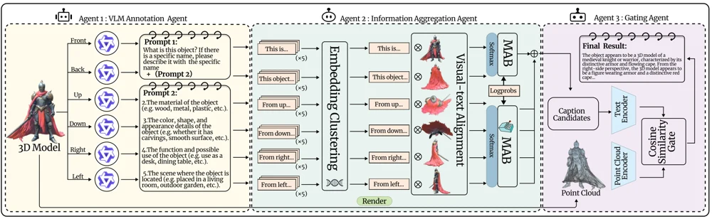
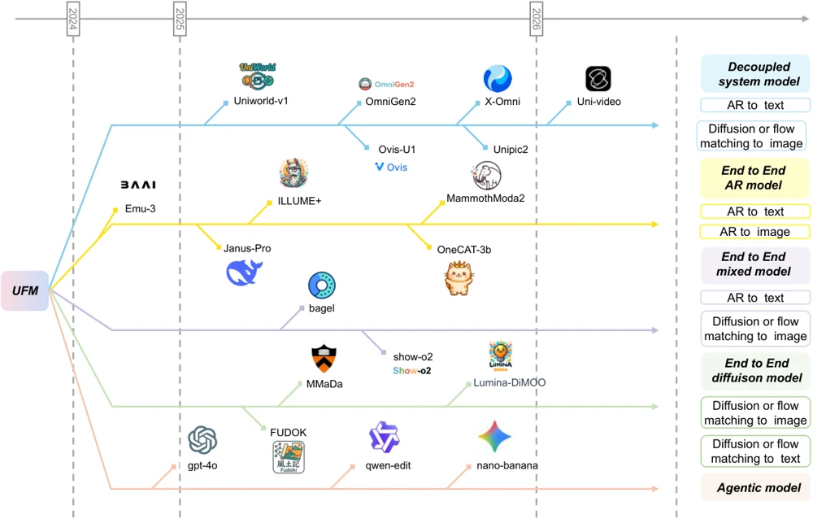
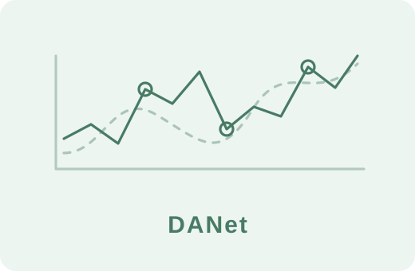
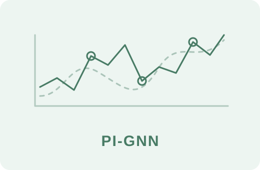
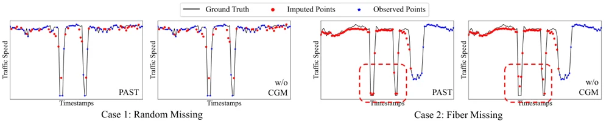
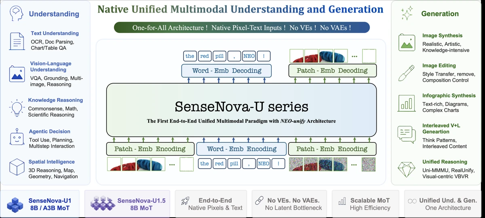

Project video
Biography
I am an undergraduate researcher in Computer Science at Shanghai Jiao Tong University, in the Zhiyuan Honors Program and MVIG Lab, advised by Prof. Cewu Lu. My research interests span embodied intelligence, agentic systems, and multimodal models, with a focus on robot self-improvement, unified visual understanding and generation, and efficient learning systems.
News
- SenseNova-U1.5 technical report is now available.
- RoboRSI research report and project demos are now available.
- Argus preprint is available on arXiv.
- Mage-Flow preprint is available on arXiv.
- RESOURCE2SKILL preprint is available on arXiv.
- UniG2U-Bench preprint is available on arXiv.
Selected Projects
Agentic Systems5
Project video
RoboRSI · project demonstration
RoboRSI: Stable, Efficient, and Reusable Robot Self-Evolution
Robot self-improvementResearch Report · 2026
LIFT · towel folding

Multimodal Learning1

UniG2U-Bench: Do Unified Models Advance Multimodal Understanding?
Multimodal evaluationarXiv 2026
Time Series & Dynamics3

DANet: A RAG-Inspired Dual Attention Model for Few-Shot Time Series Prediction
Time-series predictionCIKM 2025

PI-GNN: A Physics-Informed Graph Neural Network for Spatio-Temporal Diffusion Prediction
Physics-informed learningICASSP 2026

PAST: A Primary-Auxiliary Spatio-Temporal Network for Traffic Time Series Imputation
Time-series imputationarXiv 2025
Technical Reports2
Mage-Flow: An Efficient Native-Resolution Foundation Model for Image Generation and Editing
Image generationTechnical Report · 2026

SenseNova-U1.5: Towards Native Unified Visual Intelligence
Unified visual intelligenceTechnical Report · 2026
No publications match your search. Try another keyword or year.
Experience
- Shanghai Jiao Tong University, MVIG LabUndergraduate Research Intern with Prof. Cewu LuEmbodied intelligence, force-aware interaction, and vision-language-action systems.Oct 2024 – Present
- Microsoft Research AsiaTomorrow Star ProgramScaling laws of multimodal generative models, video generation, and multimodal training infrastructure.Jun 2025 – Dec 2025
- North Carolina State University, Wen’s LabMachine Learning Security ResearchResearch on training-time data security.Jan 2025 – Feb 2025
- Shanghai Jiao Tong University, Collaborative Intelligence Technology LabTime-Series Forecasting ResearchRetrieval-augmented few-shot time-series forecasting, leading to DANet.Feb 2024 – Dec 2024
Community Contribution
- ArgusA persistent, self-evolving agentic runtime for research and engineering.
- lmms-eval, ContributorA unified evaluation toolkit for multimodal models across text, image, video, and audio.
- lmms-engine, ContributorA flexible training engine for large multimodal models.
- Flash Linear Attention, ContributorEfficient implementations and kernels for linear attention and related sequence models.